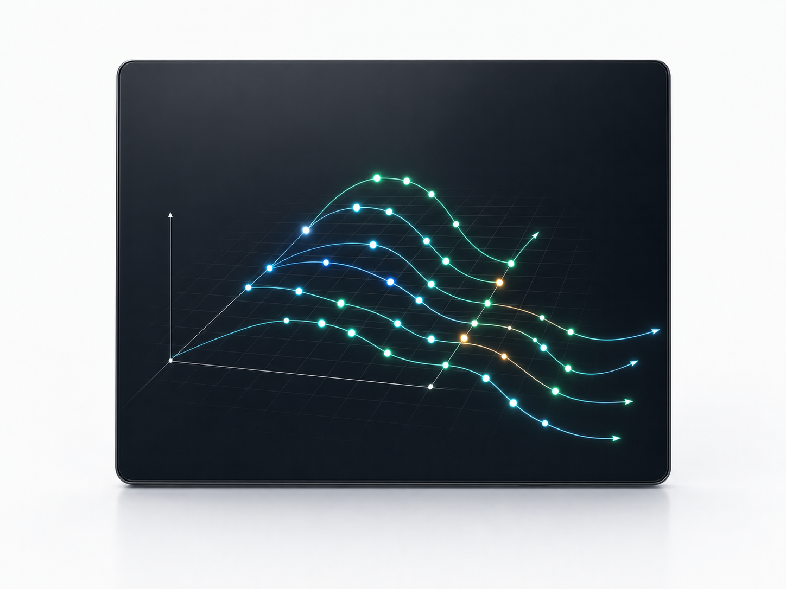

GPT-5.6 Family
Built-in routing for Sol, Terra, and Luna model variants.
CODEX v3.4.0
Frontier and local models meet Git4D intelligence and VR / AR workflows.
Built-in routing for Sol, Terra, and Luna model variants.
Responses API inference with discovery and model readiness.
Navigate and build in immersive or desktop environments.

One model surface
Choose frontier inference or private local execution without leaving the Codex workflow.
Preserved advantages
Built-in Bedrock model IDs and provider fallback keep the newest model family available to app-server sessions.
Local model discovery, automatic readiness, and Responses API compatibility sit behind the same CLI and TUI.
Repository sessions map Time, Author, Branch, and Path into a view designed for desktop and immersive analysis.
VR / AR capability detection preserves a deterministic desktop mode when an OpenXR runtime is unavailable.
Two verified channels
Both Windows bundles contain the verified executable and the guarded overwrite installer. Each asset is published with its own SHA256 digest.
codex-v3.4.0-main-windows-x86_64.tar.gz
SHA256 8C433A6A3F6AC18AF01D932FA5C3F6EA992C9F361C6AF17FF60F3CC694C21D0D
codex-v3.4.0-stable-windows-x86_64.tar.gz
SHA256 2D70C1B2822D74501A365E31CD22B0E9CE6DA4D5BF1F51E0F2C23E7D0B8380FF
Windows PowerShell
The command uses the main channel bundle, excludes the Microsoft Store App directory,
and replaces only the CLI binary under ~/.cargo/bin.
$v='3.4.0'; $n="codex-v$v-main-windows-x86_64"; $d=Join-Path $env:TEMP $n; New-Item -ItemType Directory -Force $d | Out-Null; Invoke-WebRequest "https://github.com/zapabob/Codex/releases/download/v$v/$n.tar.gz" -OutFile "$d\$n.tar.gz"; tar -xzf "$d\$n.tar.gz" -C $d; & "$d\$n\install_with_kill.ps1" -SourcePath "$d\$n\codex.exe" -TargetPath "$HOME\.cargo\bin\codex.exe" -ProcessNames codex -ExcludePathPrefixes 'C:\Program Files\WindowsApps\OpenAI.Codex_' -Force